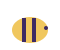

In the kitchen
A few flowers of English lavender flavour biscuits, honey and lemonade. Use very little.

Lavandula · mint family
A small Mediterranean shrub with silver-grey leaves and purple flower spikes. It loves sun, needs little water, and the bees visit it all summer.
Meet the four kindsLavandula angustifolia
The sweetest scent. Used for tea, baking and dried bunches.
Lavandula × intermedia
A hybrid with long stems. Grown in fields for lavender oil.
Lavandula stoechas
Has purple "ears" on top of each flower. Best in pots.
Lavandula latifolia
Broad leaves and a sharper, camphor-like smell.
Plant it in the sunniest spot you have.
Light, well-drained soil. Wet roots are its biggest enemy.
Water young plants. Older plants rarely need it.
Cut back after flowering, never into the old, bare wood.
A few flowers of English lavender flavour biscuits, honey and lemonade. Use very little.
Dry bunches upside down in a dark place, then put them in small bags in the wardrobe.
Bees and butterflies love it. Leave some flowers on the plant for them.